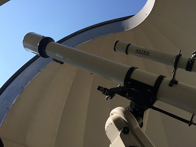
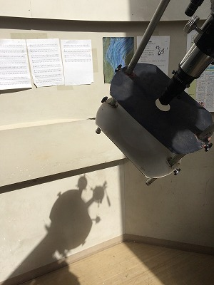
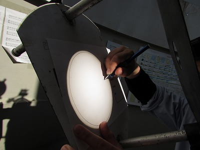

最終更新:2015.11
All rights reserved by Shibuya Makuhari High School Astronomy Club
All rights reserved by Shibuya Makuhari High School Astronomy Club
昼間観測
天文部の恒常的メイン活動、それは……
太陽観測です。
天文台の望遠鏡に
(このまま覗き込むと「目○あぁ～○があぁ……‼」と大変キケンですから)
投影板を取り付け
黒点の影を鉛筆でなぞります。
後ろに貼ってあるのは「天文部のうた」の楽譜です。